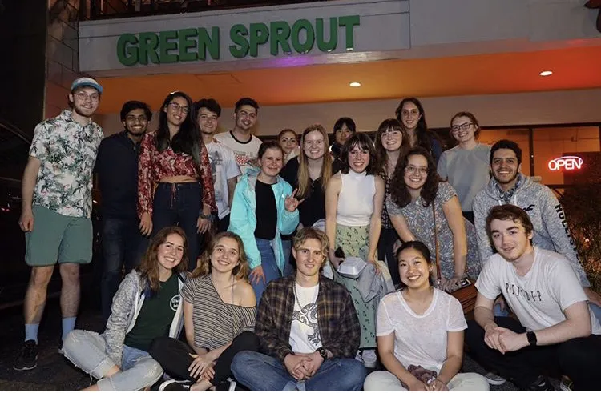

Sustainability Involvements
Veggie Jackets
In my 4th year at Georgia Tech, I served as president for Veggie Jackets (our club for anyone interested in reduced animal product consumption), which had around 660 members on our roster. My responsibilities included managing general and executive meetings, volunteer days, and communication with dining services and the other organizations we collaborated with.
Initiatives
- • 2+ events open to general members per week (1 general meeting, fundraiser, or activism event, 1 lunch event, and occasional other events like volunteer days)
- • Campaigned for local businesses to add and label vegan options on their menus
- • Established a regular meeting schedule with our dining services and saw our campus get its first all-vegan restaurant
- • Worked with activists from around the country through organizations like The Humane League, Plant Futures Initiative, and PETA
- • Established relationships and held joint events with similar clubs at Georgia State University, Kennesaw State University, Emory University, and Fort Valley State University
- • Fostered a community where anyone at Georgia Tech interested in reducing their animal product consumption could feel supported
I was formerly the outreach chair of Veggie Jackets, for which my responsibilities included planning meetings and volunteering events, advertising the club on social media, designing advertising materials, creating and maintaining consistent branding for the club, and reporting student concerns shared on social media/surveys to the school's dining services.
The Humane League
I'm a trained volunteer for the Humane League, which is an organization that advocates for animal cruelty prevention, primarily for chickens, and works with Veggie Jackets to provide us with organizing resources and other guidance. My main form of participation is currently frequently doing actions on their Fast Action Network, such as emailing, calling, and filling out contact forms for companies to encourage them to adopt more humane policies.
Work on Climate
Work On Climate is an organization that helps connect people interested in contribution to climate change solutions. During late 2020 and early 2021, I did some pro-bono software development for Work on Climate on their Braintrust Slack bot. I'm currently just a general member, regularly participating in things like climate justice workshops, food waste reduction challenges, networking conversations, etc.
In December 2020, I contributed a blog post called Why Adopt a Plant-Based Diet? to the Pangolin website, an opportunity which I found since the creator of the website is a Work On Climate member.